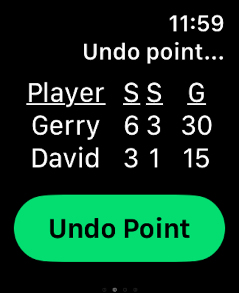

📱 App Interface
Navigate easily between sports and mini games. Here's a glimpse at the user-friendly UI:


SporTrax is a powerful yet simple app built for Apple Watch that helps you keep score during tennis matches — no phone needed! Whether you're casually playing or in a serious match, SporTrax keeps you focused and in control.
Navigate easily between sports and mini games. Here's a glimpse at the user-friendly UI:
Accidentally added a point? No worries — with one tap, you can undo the last point and keep the game fair and accurate.
Need help or have feedback? Contact us at support@example.com